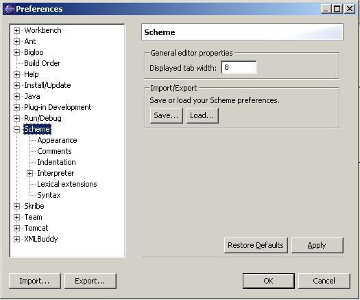
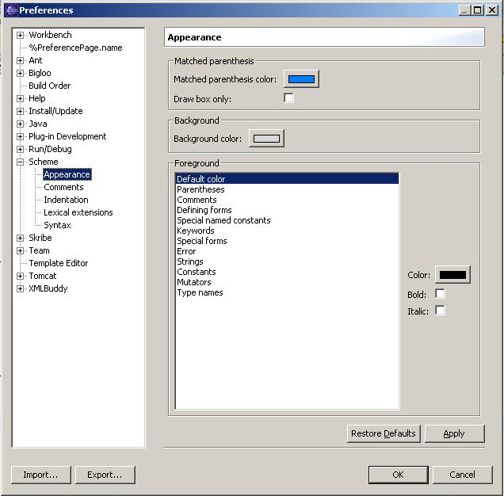
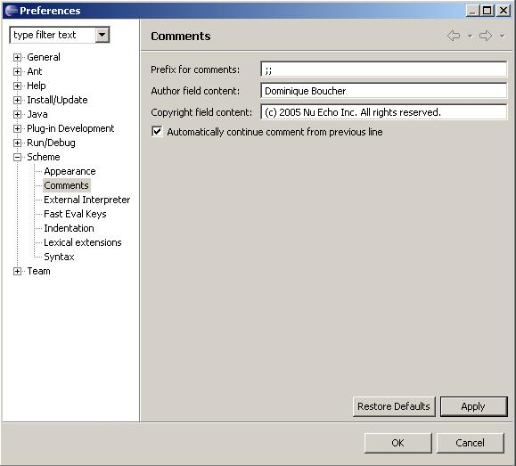
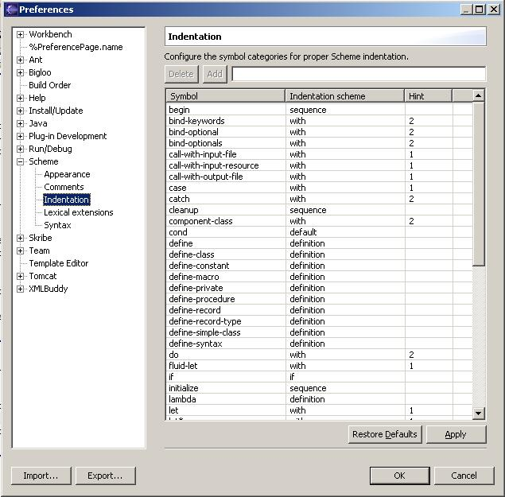
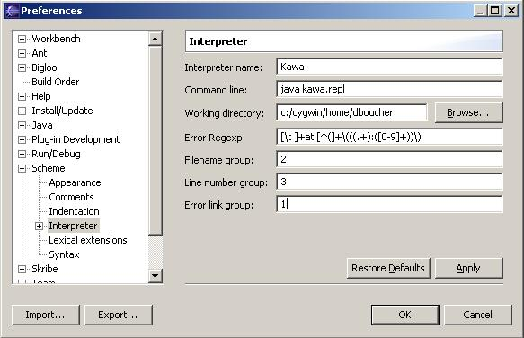
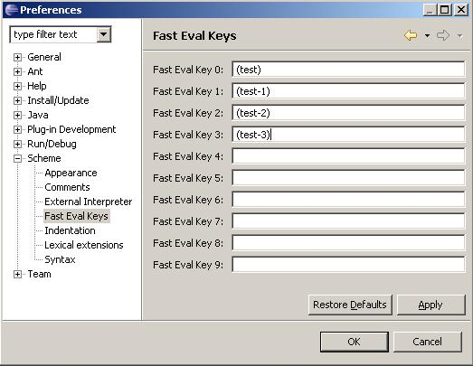
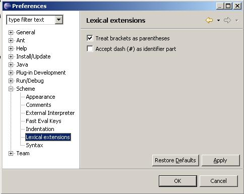
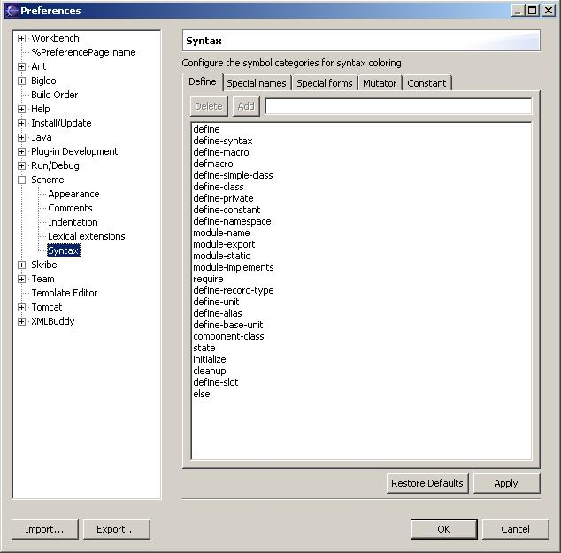

Preferences
The Scheme preference pages are used to configure various aspects of
the Scheme editor and it's integration with a Scheme interpreter.
Scheme - main page
This page controls the tab size width, and allows the serialization
of a subset of the preferences, namely those relating to syntax
and indentation (those that are usually shared between members
of a development team).

Appearance
The Appearance page controls the appearance of the various tokens
in a Scheme source file, as well as the background color, and the
way matching parentheses are highlighted.

The Comments page are used to customize comment-related features:
- the comment prefix inserted when lines are commented out;
- the author name and copyright added to header comments (inserted by the
Scheme file header comment command);
- a flag indicating whether hitting Enter in a comment makes
the comment continue on the next line.

Indentation
Indentation is a crucial part of a Scheme editor. The Indentation
page controls how sub-expressions are indented. To be easily readable by
others, Scheme code indentation must obey strict, standard rules.

The page shows a three column table, with
some controls above it to add/remove entries in the table. Each entry corresponds to
a Scheme symbol and tells the editor how to indent expressions directly inside
S-expressions starting with this symbol.
The columns in the table are:
- Name
- the symbol;
- Indentation scheme - tells how sub-expressions are indented. The possible
values are:
- default - all sub-expressions are indented below the first symbol of
the enclosing expression;
- definition - all sub-expressions are indented as the enclosing
expression plus 2 spaces (like most defining forms).
- if - all sub-expressions are indented as the enclosing
expression plus 4 spaces (like an
if special form).
- sequence - all sub-expressions are indented as the
enclosing expression plus 2 spaces (like in a
begin special
form).
- with - this is the most complex and general scheme. It is used to
control the proper indentation of calls to functions like
with-input-from-file,
for example. Thus it's name. In such function calls, the first N parameters
are indented of 4 spaces, while the others are indented of 2 spaces. This number,
N, is called the hint, and is specified in the third column.
- none - no indentation at all, all sub-expressions are indented at
the same level as the enclosing expression (this is quite unusual in
Scheme, but can be used to circumvent the indentation of top-level
definitions in PLT-style modules).
- Hint - when the indentation scheme is set to with, this number
controls how many sub-expressions are indented of 4 spaces.
The Interpreter preference page is used to configure the Scheme interpreter
with which the Scheme editor interacts.

To set up a Scheme interpreter, you must provide:
- the interpreter's name,
- the command line to start the interpreter, and
- the directory where the interpreter is started.
You can configure the Fast Eval keys using the Fast Eval preference page:

Lexical extensions
Lexical extensions are flags that can be set to change how some tokens are
processed in the Scheme source file.

These flags are:
- Treat brackets as parentheses - some Scheme systems treat
square brackets as parentheses (PLT Scheme, SISC, etc), some don't
(e.g. Kawa). Use this flag to ensure correct parsing and proper
parenthesis matching.
- Accept dash as identifier part - some Scheme systems allow
dashes as part of identifier. Use this flag to ensure correct parsing.
Syntax
The Syntax page is used to categorize symbols. These categories are used when
coloring the various symbols in a source file. Symbols not appearing in any of these
lists are colored using the default color and attributes.

Copyright (C) 2004 Dominique Boucher.